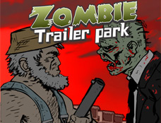

Skid
Skid is learning how to use Markdown so he can contribute to the new Blitz Research wiki.
Markdown does care about the narrative flow of Skid's prose.
- With Markdown’s reference-style links, a source document much more closely resembles the final output, as rendered in a browser. By allowing you to move the markup-related metadata out of the paragraph, you can add links without interrupting the narrative flow of your prose.
Markdown can be used for program listings. If code is indented it automajically becomes a code block.
Skid wrote Monk

Skid also wrote Zombie Trailer Park a particularly sadistic RTS using a beta version of monkey. NinjaKiwi released a Flash version October 2011 and an iOS version in December. BRL did first public release of monkey during this time.
Skid thinks monkey rocks.